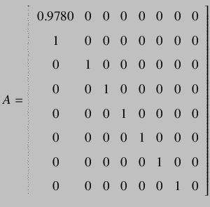
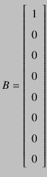
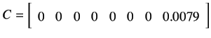

All the experiments for this project was performed remotely on SBHS, using a sampling time of 1 second. Basic codes (mpc_init.sce and mpc.sci) was taken from moodle for this course. Code for implementing MPC was written in scilab and has been mentioned in the report.
Scilab Version used: 5.2.2
SBHS number: 12 (remotely used)
Sampling time: 1 second
For graphs: Until and unless mentioned, Graphic 1 represents the Temperature set point, Graphic 2 represents the Fan and Graphic 3 represents the Temperature.
Initially, open loop experiment was performed, and Plant Transfer function was obtained. For the open loop experiment, a step change in heater from 15 to 25 units at t =200 seconds was provided (sampling time 1s). The response data was fitted to a first order transfer function with a time delay and the following was observed:
Kp=0.37, time constant = 45s and delay = 7s.
Using the above, we obtained the plant transfer function:
Scilab Method to calculate State Space matrices
State space matrices for a transfer function can be calculated as follows using Scilab:
mpc/matrix.txt
SScont (in the last line above), has the value of the required State Space matrices. (Please note: Time delays can not be directly handled in Scilab. So, for systems with delays, we will have to use alternate approach. Pade's approximation for time delay being one of the approach.)
The transfer function which we dervied for our SBHS was very close to the transfer function derived in an earlier attempt. So, using the values of A, B and C which were already calculated by him previously, we obtain the following exact values:



rokade
2017-04-23